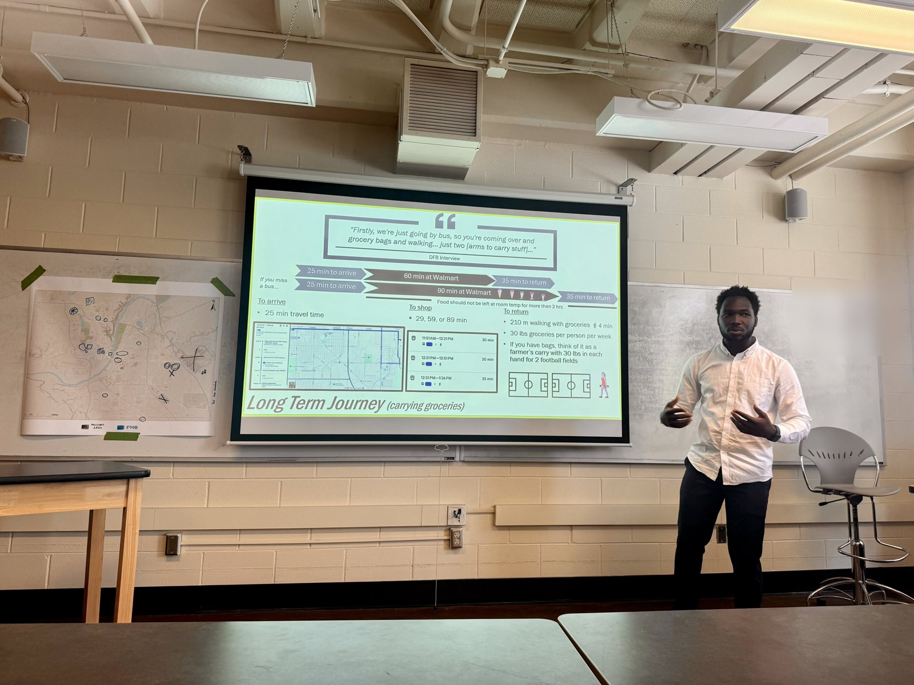

About
A researcher who designs, and a designer who never stops asking "how do we know."

To My Next Team
The best products aren't built from assumptions: they're built from evidence.
Over the past seven years, I've turned research into outcomes organizations can measure: $5M+ in business value, 10M+ users reached, and an HR platform supporting 2,000+ staff made accessible. I've done this across nonprofits, enterprise software, startups, fintech, and now NSF-funded science gateways at SGX3 while pursuing a PhD in Technology at Purdue.
What I bring isn't just research: it's clarity. I partner with internal teams and external stakeholders to uncover requirements, align priorities, make sense of complex feedback, and turn insights into actionable product decisions. From discovery through delivery, I break ambitious initiatives into achievable milestones, helping teams build with confidence. Accessibility isn't a checklist to me; it's part of building products that work for everyone.
Increasingly, I don't stop at insights. I use AI-assisted development to turn research into prototypes and working solutions, helping teams move from ideas to validation faster.
Outside of work, I lead a 300+ member Charity UX Network community and have mentored more than 200 designers into their first UX roles because I believe the best teams are built by helping others grow.
If we work together, my goal is simple: leave the product better than I found it, and leave the team stronger, too.
Hamed
Education
PhD Candidate, Technology
Purdue University
MSc, User Experience Design
Birmingham City University
Certifications & ongoing learning
Accessibility Fundamentals, Digital Accessibility, Disability and Accessibility
Microsoft
Design Thinking: The Ultimate Guide
Interaction Design Foundation
User Research: Methods and Best Practices
Interaction Design Foundation
AI for Designers
Interaction Design Foundation
Product Management
Pendo x Mind the Product
Where I am
Based in the USA 🇺🇸. Open to remote work and relocation for the right UX Research or Product Design role.